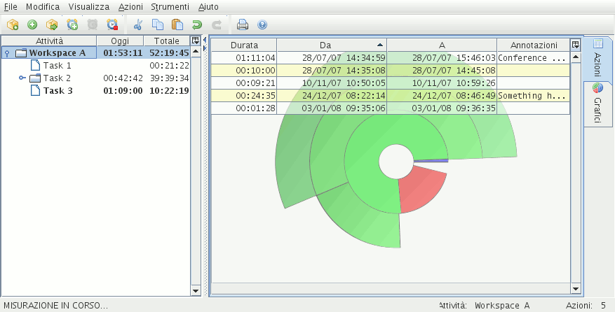

Interfaccia utenteL'applicazione mette a disposizione dell'utente alcune finestre:
Finestra PrincipaleLa finestra principale costituisce il cuore dell'applicazione.
 Qui di seguito è rappresentata la struttura della finestra principale.
Table 1: Struttura della finestra principale
Cliccando sui link in essa riportati verrà visualizzata la relativa guida. |
||||||||